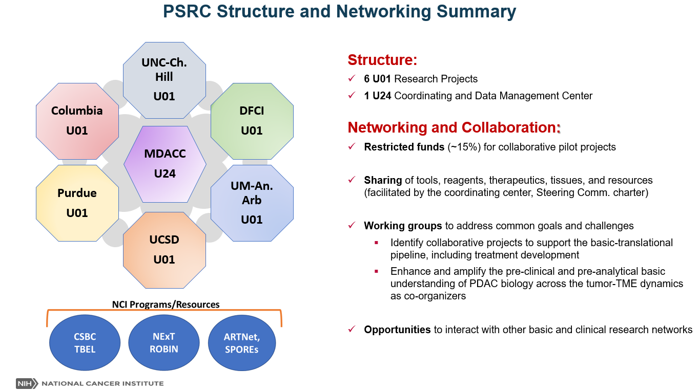

The Division of Cancer Biology (DCB) supports basic research in all areas of cancer biology at academic institutions and research foundations across the United States. As part of the National Cancer Institute, DCB provides funding for research that investigates the basic biology behind cancer. Research in the field of basic cancer biology focuses on the mechanisms that underlie fundamental processes such as cell growth, the transformation of normal cells to cancer cells, and the spread, or metastasis, of cancer cells. This research provides the building blocks to new treatments, clinical trials, and improved understanding of the disease. Basic research has enabled much of the progress made over the years in the search for a cure for cancer.
The PSRC aims to develop a multidisciplinary community of pancreatic ductal adenocarcinoma (PDAC) researchers that will expand upon traditional tumor-centric studies and ongoing immuno-oncology efforts. The network is focusing on the identification, integration, and mechanistic evaluation of additional tumor microenvironment (TME) elements driving PDAC progression and response to therapy. For more information click here
The intent of this DCB and the DCTD program is to bridge basic/mechanistic biology with preclinical/translational research. PSRC also aims to adopt a comprehensive “Tumor-TME Co-Organizer” research model in the pursuit of novel biology-backed targets involved in modulating multi-directional tumor-microenvironment dynamics. This expansion is designed to expose new biology-backed vulnerabilities that will inform the design and testing of more effective combinatorial approaches in pre-clinical platforms and near future clinical evaluation.


Bio: Jeff Hildesheim has been a member of the Division of Cancer Biology (DCB) since 2010 and co-leads several trans-NCI programs, including PSRC and the Acquired Resistance to Therapy Network (ARTNet) as Moonshot initiatives, and the Translational and Basic Science Research in Early Lesions (TBEL) Program. By design, these programs bridge basic and translational cancer research as joint partnerships between DCB and the Divisions of Cancer Treatment and Diagnosis (DCTD) and Cancer Prevention (DCP) and aim to understand the dynamics of early lesions and/or tumors and the microenvironment as co-organizers in tumor initiation, progression and response to therapy.
Jeff joined the NIH in 1989 and received his Masters and PhD in Molecular Genetics from The George Washington University – NIH Graduate Partnership Program. His graduate work was conducted under Drs. Jonathan Vogel and Stephen Katz in the Dermatology Branch, NCI and focused on developing human organotypic/skin equivalents and elucidating the mechanistic underpinnings of keratinocyte differentiation and stratification processes; and how disruption of said processes contribute to wide-ranging skin disorders including cancer. He then joined Dr. Albert Fornace’s Gene Response Section of the NCI, where he studied the role of Stress MAPK Signaling and Gadd45a in regulating UV-induced skin inflammation and tumorigenesis.
Contact: Hildesheim, Jeffrey (NIH/NCI) [E]
Bio: Peter Ujhazy has received his Medical Degree at the Comenius University, and his PhD at the Cancer Research Institute of the Slovak Academy of Sciences in Bratislava, Czechoslovakia, where he started his career in the Department of Tumor Immunology. He was involved in the development of diagnostics in blood malignancies, he studied natural immunity in lymphoid malignancies, and gained clinical experience in the adjacent Cancer Center. He worked for 6 years as a Visiting Scientist and later as a Cancer Research Scientist in Dr. Henry Mihich's laboratory at Roswell Park Cancer Institute in Buffalo, NY, USA and published extensively on chemo-immunotherapy and multidrug resistance. After a short stay in the biotech company Biotech Research Laboratories in the Washington, DC metropolitan area, he decided not to pursue a career in industry and accepted a position in Dr. Irvin Arias' laboratory in the Department of Physiology, Tufts University in Boston, MA, where he studied the physiologic role of ATP-dependent transporters.
In 2001, Dr. Ujhazy accepted a position in the National Cancer Institute's Organ Systems Branch that managed Specialized Programs of Research Excellence (SPOREs). Working with SPOREs grants brought him closer to the goal of his original training - that is to help patients and populations at risk of cancer. Dr. Ujhazy has served as the Program Director for Lung, Leukemia, Lymphoma, Myeloma, Sarcoma, GI, Pancreas, Head & Neck, and Brain Tumor SPOREs. Currently, he oversees SPOREs in lung, sarcoma, myeloma, and epigenetics. He is also involved as a Project Scientist in the Small Cell Lung Cancer and in the Pancreatic Ductal Adenocarcinoma Stromal Reprograming (PSRC) Consortia. His other duties include serving on various NCI committees and working groups.
Contact: Ujhazy, Peter (NIH/NCI) [E]
Bio: Tapan Bera is a Program Director at the Tumor Biology and Microenvironment Branch within the Division of Cancer Biology, NCI. Tapan manages grant portfolio on various areas of cancer biology that includes senescence, cell states/plasticity, therapy resistance and molecular signaling in the tumor microenvironment. He is involved in several trans-NCI special programs including PDAC Stromal Reprograming Consortium (PSRC), the Acquired Resistance to Therapy Network (ARTNet), and the Translational and Basic Science Research in Early Lesions (TBEL) Program.
Tapan received his M.S. and Ph.D. in biochemistry from the Calcutta University, India. He completed his postdoctoral training at the Cancer Research Laboratory, University of California-Berkeley and at the Laboratory of Molecular Biology, Center for Cancer Research, NCI. Before joining DCB as Program Director in 2022, he was a Senior Associate Scientist at the Laboratory of Molecular Biology, CCR, NCI. During his tenure at the intramural research program at the CCR, NCI, his research focused mainly on to understand the molecular basis of cancer by identifying the genes involved in this process and translating the information to develop antibody-based targeted therapy of cancer. He has generated several genetically modified mouse models for preclinical evaluation of recombinant immunotoxin targeting Mesothelin and BCMA.
Contact: Bera, Tapan (NIH/NCI) [E]
Bio: Natalia Mercer is a Program Director at the Tumor Biology and Microenvironment Branch. She joined DCB in 2020. She manages a grant portfolio that comprise areas including tumor stroma, tumor and microenvironment metabolism, protein modifications, and glycobiology. Natalia is involved with the Alliance for Glycobiologists of Cancer Research and the Pancreatic Ductal Adenocarcinoma Stromal Reprogramming Consortium (PSRC).
Natalia received her Biochemistry and Ph.D. degrees from the Facultad de Ciencias Exactas, Universidad Nacional de La Plata, Argentina. Natalia trained in the field of glycobiology at Universidad Nacional de La Plata (UNLP), the National Cancer Institute, and at the University of Maryland. Areas of research focus include the study of RAGE and galectin-3 as receptors for AGEs in osteosarcoma cell lines, galectin binding in duodenal cow milk allergy, role of galectin-1 in survival of epithelial cells along the crypt-villus axis of small intestine, structure-function studies of glycosyltransferases and its applications for detection of terminal N-acetylglucosamine (GlcNAc) residues cellular surface. Prior to joining NCI as a Program Director, she was a Program Director at the GVN, a non-profit organization dedicated to network virologists globally through training the next generation and joint initiatives.
Contact: Mercer, Natalia (NIH/NCI) [E]
Bio: Steven F. Nothwehr, PhD is a Program Director at the Translational Research Program within the Division of Cancer Treatment and Diagnosis, National Cancer Institute (NCI).
His academic training included PhD thesis work in Molecular Biology and Biochemistry at Washington University in St. Louis, in the laboratory of Dr. Jeffrey I. Gordon. After postdoctoral work at the University of Oregon, Dr. Nothwehr accepted an Assistant Professor position at the University of Missouri-Columbia, where he was later promoted to Associate Professor. There, he taught courses in cell and molecular biology and performed NIH-funded research in the areas of intracellular protein/membrane trafficking and sorting and programmed cell death. He has published 26 peer reviewed manuscripts and 7 invited reviews and book chapters.
Dr. Nothwehr came to the NIH in 2007 initially for a sabbatical in the AAAS Science & Technology Policy Fellowship program. In 2009, he took a position as a Scientific Review officer at the Center for Scientific Review where he managed the Cancer Genetics study section. He joined the Translational Research Program in 2011.
Contact: Nothwehr, Steve (NIH/NCI) [E]
Contact: Nothwehr, Steve (NIH/NCI) [E]
Bio: Toby T. Hecht, PhD, earned her doctorate in microbiology and immunology from the Albert Einstein College of Medicine. She did her post-doctoral research at Yale University before coming to the NIH where, among other accomplishments, she created a unique Hodgkin's lymphoma-specific monoclonal antibody that was used in both imaging and therapy trials and was instrumental in the development of ch14.18 (dinutuximab), an FDA-approved effective agent for children with high-risk neuroblastoma.
Dr. Hecht has worked for over 43 years at the NIH, 34 of which were spent at the NCI in programmatic activities and biological agent development. She has also guided many projects (from conception to testing in the clinic) through the NCI Rapid Access to Intervention Development (RAID) program and the Drug Development Group program, which are now combined into a single NCI Experimental Therapeutics Program. Some of the agents have been licensed by pharmaceutical companies and have reached the marketplace; a few have become first-line therapeutic agents. In 2011, Dr. Hecht was chosen as the Associate Director of the Translational Research Program, the program that oversees the Specialized Programs of Research Excellence (SPOREs). She continues to explore new ways to promote collaborations among cancer translational researchers, to support the highest level of innovative research among both established and early career investigators, and to foster equity, diversity and inclusion in the SPORE Program and in the NCI in general. In 2015 she was appointed the Deputy Director of DCTD. She is currently involved in developing resources for cell-based immunotherapy, establishing a new glioblastoma therapeutics network, studying the longitudinal development of cancers in dogs as a comparative oncology model and overseeing the creation of an Integrated Canine Data Commons to further research on human cancers by enabling comparative analysis with canine cancer.
Contact: Hecht, Toby (NIH/NCI) [E]